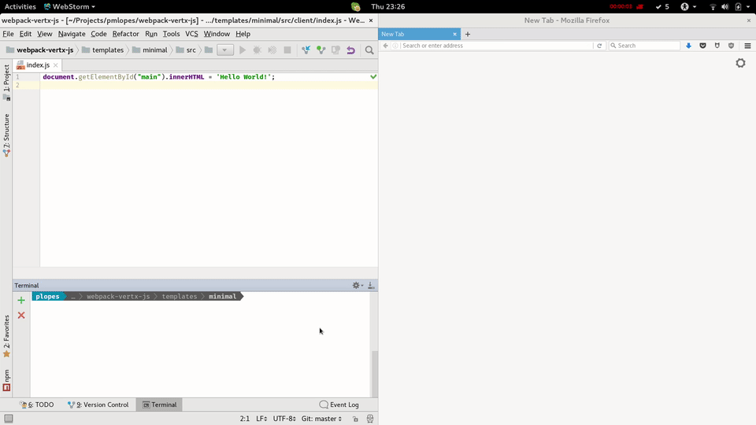

A Workflow for Modern Web Development¶
Modern web development is more than just a HTTP server and generation of HTML on a request response workflow.
This would be the case in the old days of Servlet programming, nowadays we need to build complex single page applications with many resources and complex build steps.
With Vert.x we can define a workflow that is familiar both to backend developers and as well to frontend developers.
A Backend web application¶
A typical backend application would be a server serving some content, for this one would use maven to build the application, your pom.xml would look like:
<?xml version="1.0" encoding="UTF-8"?> <project xmlns="http://maven.apache.org/POM/4.0.0" xmlns:xsi="http://www.w3.org/2001/XMLSchema-instance" xsi:schemaLocation="http://maven.apache.org/POM/4.0.0 http://maven.apache.org/xsd/maven-4.0.0.xsd"> <modelVersion>4.0.0</modelVersion> <packaging>jar</packaging> <groupId>com.example</groupId> <artifactId>com.example</artifactId> <version>1.0.0</version> <name>example</name> <dependencies> <dependency> <groupId>io.vertx</groupId> <artifactId>vertx-web</artifactId> <version>3.4.2</version> </dependency> <dependency> <groupId>xyz.jetdrone</groupId> <artifactId>hot-reload</artifactId> <version>0.0.2</version> </dependency> </dependencies> <build> <pluginManagement> <plugins> <!-- We specify the Maven compiler plugin as we need to set it to Java 1.8 --> <plugin> <artifactId>maven-compiler-plugin</artifactId> <version>3.1</version> <configuration> <source>1.8</source> <target>1.8</target> </configuration> </plugin> </plugins> </pluginManagement> <plugins> <plugin> <groupId>org.apache.maven.plugins</groupId> <artifactId>maven-shade-plugin</artifactId> <version>2.3</version> <executions> <execution> <phase>package</phase> <goals> <goal>shade</goal> </goals> <configuration> <transformers> <transformer implementation="org.apache.maven.plugins.shade.resource.ManifestResourceTransformer"> <manifestEntries> <Main-Class>io.vertx.core.Launcher</Main-Class> <Main-Verticle>com.example.Main</Main-Verticle> </manifestEntries> </transformer> <transformer implementation="org.apache.maven.plugins.shade.resource.AppendingTransformer"> <resource>META-INF/services/io.vertx.core.spi.VerticleFactory</resource> </transformer> </transformers> <outputFile>${project.basedir}/target/${project.artifactId}-${project.version}-fat.jar</outputFile> </configuration> </execution> </executions> </plugin> </plugins> </build> </project>
And the source code structure would be:
. ├── pom.xml └── src └── main ├── java │ └── com │ └── example │ └── Main.java └── resources └── webroot └── index.html
A minimal server¶
The minimal Server would be the Main.java file and it should look like:
package com.example; import io.vertx.core.AbstractVerticle; import io.vertx.ext.web.Router; import io.vertx.ext.web.handler.StaticHandler; import xyz.jetdrone.vertx.hot.reload.HotReload; public class Main extends AbstractVerticle { @Override public void start() throws Exception { final Router router = Router.router(vertx); // development hot reload router.get().handler(HotReload.create()); // Serve the static resources router.route().handler(StaticHandler.create()); vertx.createHttpServer().requestHandler(router::accept).listen(8080); } }
It is very basic, it uses the hot deploy handler and serves static files.
While the index.html would be:
<html> <head> <title>Hot Reload</title> </head> <body> <div id="main"></div> <script src="bundle.js"></script> <script src="/hot-reload/script" type="application/javascript"></script> </body> </html>
What is this hot reload?¶
You might have noticed these hot reload references. Hot reload is a handler that will reload your page every time your server restarts, it is a development time handler that you can ignore once you go into production but will save you many F5 clicks.
You will see it in action later.
A frontend application¶
Lets look into the frontend aspect. Modern web development is complex, the most popular choices are between using:
- EcmaScript6
- TypeScript
For programming and
- Angular4
- React.js
- Vue.js
- Aurelia
- Backbone
as framework. But lets keep it simple, a simple hello world using webpack since pretty much all these options rely on it as a base build and bundler.
Your project will have some more files:
. ├── package.json ├── pom.xml ├── src │ ├── client │ │ └── index.js │ └── main │ ├── java │ │ └── com │ │ └── example │ │ └── Main.java │ └── resources │ └── webroot │ └── index.html └── webpack.config.js
package.json¶
The package.json file is the couter part of pom.xml for the frontend world, a minimal example would be:
{ "name": "basic", "version": "1.0.0", "description": "", "private": true, "author": "Paulo Lopes", "license": "MIT", "dependencies": { }, "devDependencies": { "babel-core": "^6.22.1", "babel-loader": "^6.2.10", "webpack": "^2.2.0", "webpack-vertx-plugin": "0.0.2" } }
Remember that I want to make a hello world example so there are no dependencies just devDependencies so we can use webpack.
Configure webpack¶
Webpack is controlled by the file webpack.config.js it is code as oposed to package.json for this example it should be:
var path = require('path'); const VertxPlugin = require('webpack-vertx-plugin'); module.exports = { entry: path.resolve(__dirname, 'src/client/index.js'), output: { filename: 'bundle.js', path: path.resolve(__dirname, 'src/main/resources/webroot') }, module: { loaders: [ { test: /\.js$/, exclude: /node_modules/, loader: 'babel-loader' } ] }, plugins: [ new VertxPlugin({ fatJar: 'target/com.example-1.0.0-fat.jar' }) ] };
What we're saying here is that our application starts from the src/client/index.js file and we will use babel.js to transpile modern JavaScript to JavaScript browsers can handle.
We're using a special Vert.x plugin that does some nice tricks such as extracting js from java jars so they are available to babel. This gives you better code analysis and more optimized bundles.
So finally lets look at index.js:
document.getElementById("main") .innerHTML = 'Hello World!';
Simple!
Building you application¶
With the given setup webpack will drive the build. The reason is that in order to build the backend one needs the frontend application under the src/main/resources so it can be packaged with the final runnable jar.
Webpack does not know anything about java or maven so that is where the plugin gets in action. It will run maven package once webpack sucessfuly builds.
So the flow will be:
- webpack start
- babel will transpile js if needed
- webpack generates a
bundle.jsundersrc/main/resources/webroot - VertxPlugin will run
mvn package
But to you it would be just as running:
$ webpack
Running: mvn...
Running: mvn...
Hash: ceaea9fa624993f698d5
Version: webpack 2.7.0
Time: 6237ms
Asset Size Chunks Chunk Names
bundle.js 2.73 kB 0 [emitted] main
bundle.js.map 2.88 kB 0 [emitted] main
[0] ./src/client/index.js 59 bytes {0} [built]
This works great but you will find yourself restarting and reloading the server and browser all the time as you keep developing your application.
Watching for changes¶
In order to optimize the workflow, webpack can watch for changes and trigger a new build. However this does not apply to the java side of the project.
Note
You can also watch changes with vert.x by running java -jar yourjar.jar --redeploy="src/**" --on-redeploy="cmd to run".
But that would not be productive if you would need to do it manually so the plugin will identify when webpack is running in watch mode and do it for you.
So your run would be:
webpack --watch
Webpack is watching the files…
Running: mvn...
Running: java...
Hash: ceaea9fa624993f698d5
Version: webpack 2.7.0
Time: 3641ms
Asset Size Chunks Chunk Names
bundle.js 2.73 kB 0 [emitted] main
bundle.js.map 2.88 kB 0 [emitted] main
[0] ./src/client/index.js 59 bytes {0} [built]
Sep 07, 2017 11:22:24 PM io.vertx.core.impl.launcher.commands.Watcher
INFO: Watched paths: [/home/plopes/Projects/pmlopes/webpack-vertx-js/templates/minimal/src/main]
Sep 07, 2017 11:22:24 PM io.vertx.core.impl.launcher.commands.Watcher
INFO: Starting the vert.x application in redeploy mode
Sep 07, 2017 11:22:24 PM io.vertx.core.impl.launcher.commands.VertxIsolatedDeployer
INFO: Succeeded in deploying verticle
And you would see that the application would get recompiled if files are changed.
Hot reload¶
Now that you can watch for changes we can use the handlers stated initially and this would be like:
